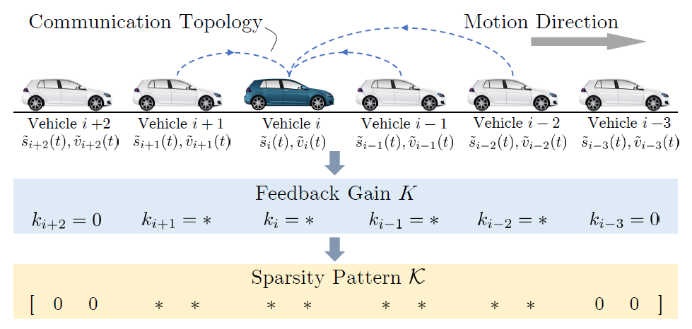

Structured optimal control
Due to the limit of communication abilities in practice, the CAV can only receive partial information of the global traffic system for its feedback. Therefore, it is important to consider the local available information of the neighboring vehicles. This leads to the notion of structured controller design.
Introduction
Implementation
Animation
Two demonstrations are shown below:
All the vehicles are HDVs: traffic wave emerges

There is one AV: dissipating traffic wave

Experiment results
This folder contains files for test cases.
Reference
Wang, J., Zheng, Y., Xu, Q., Wang, J., & Li, K. (2020). Controllability Analysis and Optimal Control of Mixed Traffic Flow with Human-driven and Autonomous Vehicles. IEEE Transactions on Intelligent Transportation Systems, 1-15.[pdf] Wang, J., Zheng, Y., Xu, Q., Wang, J., & Li, K. (2019, June). Controllability analysis and optimal controller synthesis of mixed traffic systems. In 2019 IEEE Intelligent Vehicles Symposium (IV) (pp. 1041-1047). IEEE. [pdf] [poster]